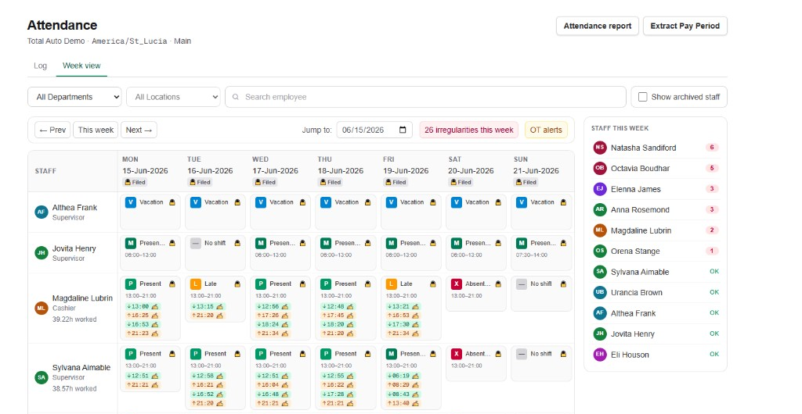

Disconnected punch records
Raw in-and-out times do not explain the expected shift or whether an arrival was late.
See who was scheduled, who attended, who was late, and which shifts were missed—all connected to the weekly roster.
Review manual or supported device-pushed punches, correct exceptions, and prepare worked-time summaries for payroll handoff.

A clock-in says someone arrived. The roster explains when they were expected, whether they were late, and which scheduled shifts still need attention.
Raw in-and-out times do not explain the expected shift or whether an arrival was late.
When the roster lives in another file, managers spend time matching names, dates, and hours.
Late and missed shifts are easier to review when their status sits beside the expected schedule.
Simple Roster Plus uses the expected shift, actual in-punch, and your organization's grace period to make each status easy to scan.
The shift is planned, but the late-or-absent threshold has not passed.
The first in-punch arrived within the configured grace period.
The first in-punch followed the planned start plus grace, with late minutes shown.
No in-punch was recorded after the scheduled start and grace window.
Expected shift times and attendance status sit in the same weekly view, helping managers focus on late and absent exceptions without rebuilding the roster in a spreadsheet.

Use the capture method that fits your team today, while keeping the same roster-connected attendance view.
Manual attendance
Managers can record an in or out time and include an optional note—no biometric terminal required.
Supported device attendance
Supported ZKTeco terminals can send compatible ATTLOG punches using ADMS push.
Compatibility depends on the terminal model, firmware, and configuration. Device slots refer to software connectivity and do not include biometric hardware.
Managers can fix unfiled records directly while retaining useful context about the original punch and its source.
Update its time, direction, or note. When the time changes, the first original time is retained.
Mark a day manually present or absent and add a reason or note when the punches do not tell the full story.
Keep unknown device punches, match the user ID to an employee, and backfill earlier unmatched records.
Worked time is calculated from completed in-and-out pairs. Review individual attendance, prepare a pay-period summary, then download CSV or print it for whoever runs payroll.
Incomplete or irregular punch sequences may require correction. Simple Roster Plus does not process payroll.
Roster, attendance, and payroll handoff—without adding project timers or a heavyweight enterprise HR suite.
Free
$0 / month
Up to 10 staff and 2 locations. Includes one device connectivity slot with a 30-day sync trial.
Start FreePlus
$19.99 / month
Up to 50 staff, unlimited locations, and one included device connectivity slot.
Start FreePro
$49.99 / month
Up to 100 staff, unlimited locations, and three included device connectivity slots.
Contact usDevice slots provide software connectivity; physical biometric hardware is not included. See full limits and annual options in Simple Roster Plus pricing, or learn about our employee roster software.
The weekly roster supplies each employee's expected shift times. Simple Roster Plus places those times beside actual punches and scheduled, present, late, or absent status.
Scheduled means the planned shift has not crossed the absent threshold. Present means the first in-punch arrived within grace. Late means it arrived after shift start plus grace. Absent means no in-punch was recorded after that threshold.
Yes. Managers can add manual in-and-out punches with optional notes and use manual present or absent day overrides.
Yes. An unfiled punch can be edited or deleted. When its time changes, Simple Roster Plus retains the first original time and records correction context.
Yes. One organization-level grace period controls the late threshold and when a scheduled shift with no in-punch becomes absent.
The staff report can flag punch sequences that may be incomplete. An unmatched in-punch does not add worked time, so a manager may need to correct the record.
Supported ZKTeco terminals can send compatible ATTLOG punches using ADMS push. Compatibility depends on the terminal model, firmware, and configuration.
Supported ADMS terminals can push punches when real-time ATTLOG upload is configured. The manager view is not a guaranteed live stream and may require a refresh.
You can prepare an Extract Pay Period summary, download it as CSV, or print it for payroll handoff. Simple Roster Plus does not process payroll, calculate taxes, or create vendor-specific payroll files.
Attendance records and devices are location-specific. Free supports up to two locations, while Plus and Pro allow more. There is no combined all-location attendance dashboard.
No. Employee phone clock-in, GPS attendance, and geofencing are not current Simple Roster Plus features.
No. Managers review late and absent exceptions in the app; Simple Roster Plus does not currently send attendance-specific SMS, email, WhatsApp, or push notifications.
Plan the roster, review who attended, correct exceptions with context, and prepare worked-time summaries for payroll handoff.